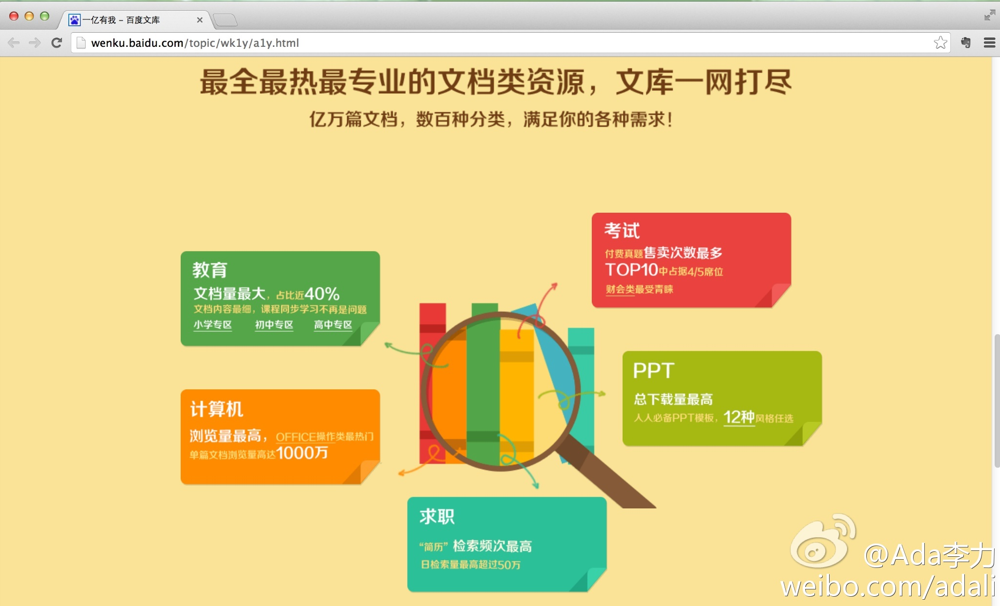

昨天的BLUG聚会上, 有位陈大夫一直很津津有味地听大家聊, 我问她能听得懂吗? 她说自己是作为Linux用户参与的, 用了有半年, 很喜欢Linux的无病毒和无广告，因为她的电脑会存储很多的病人档案，对安全性要求高。也觉得Linux对普通用户的宣传教育还不够。
其实用户的一些需求，听起来都很简单，要求也很合理，但解决起来确并不那么容易。比如，谁来清除小白用户电脑桌面上布满的广告？@Ada李力:昨天的BLUG聚会上, 有位陈大夫一直很津津有味地听大家聊, 我问她能听得懂吗? 她说自己是作为Linux用户参与的, 用了有半年, 很喜欢Linux的无病毒和无广告，因为她的电脑会存储很多的病人档案，对安全性要求高。也觉得Linux对普通用户的宣传教育还不够。
百度文库的统计值得看看. - 最能创收的文档是考试真题; 文档量最大的是中小学教育; 对计算机初级知识的需求还是很旺盛, 可是还是停留在浏览量上; 下载量最大的是PPT模板, 可见很缺乏设计类内容; 竟然搜简历频次最高, 这个有些出乎我意料,是不是在找简历样板和模板,跟小学生抄作文似的? 
安全感是个很有意思的词汇。我听过很富有的人说没有安全感，总觉得钱不够用。钱并能解决全部的安全感问题。而我认为真正的安全感是：即使变得一无所有，也会恐惧和害怕，但仍有信心再次发出挑战。- 所以，安全感是一种心态。
最近感觉有两件事儿是特别需要感激的。一个是技术的发展，尤其是互联网技术和开源文化，让许许多多普通人能够做以前没有机会做或者门槛太高的事情，比如创业。另一个是世界上确实有很多很多愿意帮助他人的人，认识的，或者不认识的，让我获益颇多。
战略上可以藐视，战术上一定得重视。钱是商业游戏的衡量标准//@陈沙克:钱多少为够呢？没必要太在乎。@Ada李力:我现在意识到，之前自己说过的：“我不太在乎钱”，是多么多么愚蠢的一句话。如果钱在你的头脑中没有处于第一位，那么它就不会粘到你的手上。